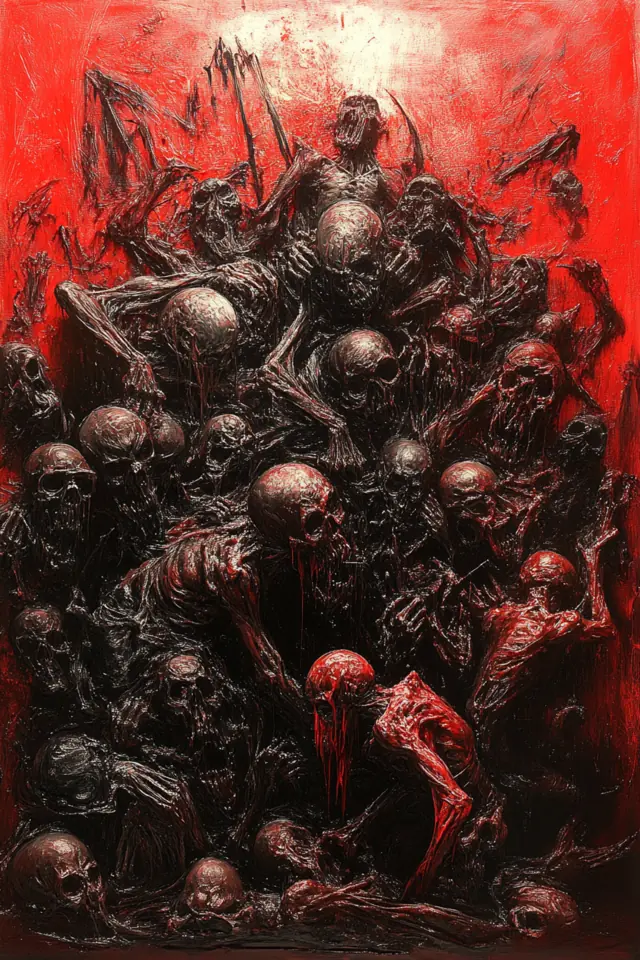

Actúa libremente
Haz, habla, fuerza la narración o deja que el abismo continúe. No hay menú de decisiones.
Narrativa sin caminos prefijados
Un juego de rol y escritura colaborativa de horror cósmico. Cada acción altera un mundo persistente que recuerda tus hallazgos, tus heridas y aquello que ya sabe tu nombre.
ARCHIVO PERSONAL
Todavía no hay aventuras guardadas.
Haz, habla, fuerza la narración o deja que el abismo continúe. No hay menú de decisiones.
Las reglas controlan estados, objetos, pistas y consecuencias aunque cambie el narrador.
Resumen, tarjetas y recuerdos recuperan hechos antiguos sin reenviar toda la historia.
Biblioteca de anomalías
ARCHIVO VISUAL
Estudio de escenarios
